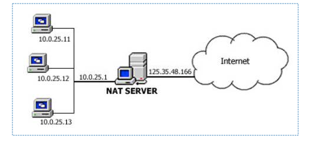

NAT: Network Address Translation
NAT is a protocol to map multiple private hosts to one publicly exposed IP address. Typically packets passing from the private network to the public network will have their source address modified while packets passing from the public network back to the private network will have their destination address modified.
Address Mapping
The mapping behavior of a NAT has typically two possibilities.
- All requests from the same internal IP address and port are mapped to the same external IP address and port. This mapping behavior is called "Cone".
- All requests from the same internal IP address and port, to a specific destination IP address and port, are mapped to the same external IP address and port. If the same host sends a packet with the same source address and port, but to a different destination, a different mapping is used. This mapping behavior is called "Symmetric".
You should understand why they are named "Cone" and "Symmetric" with below diagrams.

Address Filtering
The filtering behavior of a "Cone" NAT has three possibilities.
- Any external host can send a packet to the internal host, by sending a packet to the mapped external address. This is "Full Cone".
- An external host (with IP address X) can send a packet to the internal host only if the internal host had previously sent a packet to IP address X. This is "Address Restricted Cone".
- The restriction includes port numbers. Specifically, an external host can send a packet, with source IP address X and source port P, to the internal host only if the internal host had previously sent a packet to IP address X and port P. This is "Port Restricted Cone".
The filtering behavior of "Symmetric" NAT is same as "Port Restricted Cone" NAT.
NAT Traversal
The NAT address mapping and filtering behaviors prevent a local host from being connected directly by a host on public network, while that is necessary for peer-to-peer networking. A series of IETF specifications are proposed to resolve the connection issues raised from NAT, i.e. NAT traversal.
- RFC 4787: Network Address Translation (NAT) Behavioral Requirements for Unicast UDP
- RFC 3489: STUN - Simple Traversal of User Datagram Protocol (UDP) Through Network Address Translators (NATs)
- RFC 5389: Session Traversal Utilities for NAT (STUN)
- RFC 5769: Test Vectors for Session Traversal Utilities for NAT (STUN)
- RFC 5780: NAT Behavior Discovery Using Session Traversal Utilities for NAT (STUN)
- RFC 5766: Traversal Using Relays around NAT (TURN): Relay Extensions to STUN
- RFC 5245: Interactive Connectivity Establishment (ICE): A Protocol for NAT Traversal for Offer/Answer Protocols